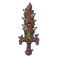
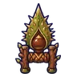

ตอไม้ผี
มอนธาตุดิน Lv 26–40
เจอที่
| แมพ | โซน | Lv | ภูมิภาค |
|---|---|---|---|
| ป่าเห็ดเรืองแสง | 30–36 | ป่ากองไฟ | |
| ป่าเห็ดเรืองแสง | บึงเงาจันทร์ | 34–40 | ป่ากองไฟ |
| ป่าโอ๊กยักษ์ | 26–40 | ป่ากองไฟ | |
| ป่าโอ๊กยักษ์ | ตอโอ๊กหอคอยกระรอก | 36–40 | ป่ากองไฟ |
| กระท่อมพรานร้าง | 26–40 | ป่ากองไฟ | |
| กระท่อมพรานร้าง | หน้ากระท่อมพราน | 36–40 | ป่ากองไฟ |
| บ่อน้ำจันทร์กลางป่า | 26–40 | ป่ากองไฟ | |
| บ่อน้ำจันทร์กลางป่า | ขอบบ่อน้ำจันทร์ | 36–40 | ป่ากองไฟ |
| หอรากมืด (Dark Root) | ประตูราก | 5–14 |
ค่าสถานะตามเลเวล
| Lv | HP | ATK | DEF | MDEF | EXP | Job |
|---|---|---|---|---|---|---|
| 26 | 3,056 | 45–66 | 15 | 4 | 37 | 28 |
| 33 | 4,919 | 60–90 | 18 | 5 | 45 | 34 |
| 40 | 8,316 | 83–124 | 22 | 6 | 53 | 40 |
ตีด้วยธาตุไหนดี
แรงขึ้น: ไฟ ×1.5 พิษ ×1.25
เบาลง: ลม ×0.5 ดิน ×0.25
วัตถุดิบที่ดรอป
| ของ | โอกาส | |
|---|---|---|
| เปลือกไม้ผี | 55% | 1 ชิ้น (15% ได้ 2) |
อุปกรณ์ที่ดรอป (10)
| ของ | โอกาส |
|---|---|
| 0.25% | |
| 0.25% | |
| 0.25% | |
| 0.25% | |
| 0.25% | |
| 0.25% | |
| 0.25% | |
| 0.25% | |
 ดาบใหญ่หนามตอไม้ | 0.12% |
 คาทาร์เปลือกเกาลัด | 0.12% |
สกิล
ทุบพื้น (Lv 25+) · ทุบพื้น (Lv 60+) · ร่างแข็ง (Lv 60+)